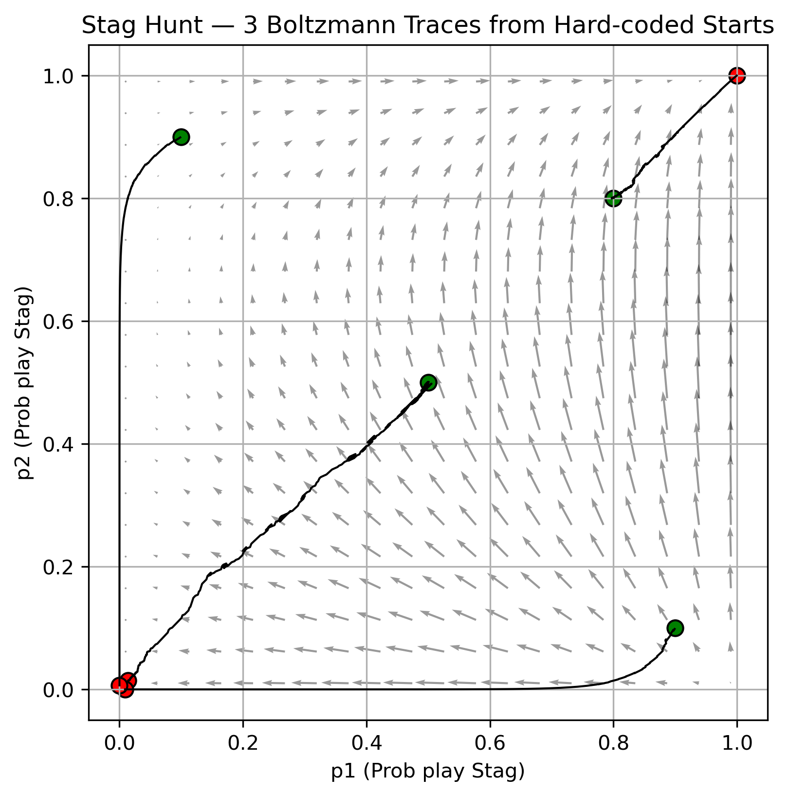
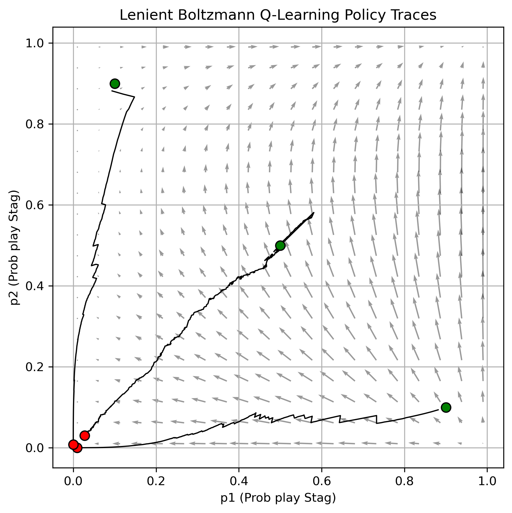

Part one: dynamics you can see
A two-player, two-action game has a policy space that is just the unit square — the probability each player assigns to their first action. That makes it the one setting where you can put a learning algorithm's actual trajectory on top of the theory's predicted flow and check whether they agree.
The theory here is the replicator equation, which describes how a strategy's share changes according to how its payoff compares with the population average. Plotted as a vector field it shows where the dynamics push. On top of that go the empirical policy traces of agents actually running Q-learning.
Boltzmann exploration on the Stag Hunt
Q-learning updates action values with the usual temporal-difference rule; what changes between variants is how a policy is read off those values. Boltzmann exploration takes a softmax over the Q-values with a temperature τ — large τ flattens the distribution towards exploration, small τ sharpens it towards the best-valued action. Here τ decays over the run, so the agents explore early and commit late.

The Stag Hunt has two pure Nash equilibria — both hunt the stag, or both hunt the hare — of which only stag/stag is Pareto optimal. The picture is a clean basin structure: the trace from (0.5, 0.5) and the two asymmetric starts collapse into the hare/hare corner, while the start already biased towards cooperation climbs to stag/stag. Nothing crosses the diagonal. That is risk dominance doing exactly what the theory says it does: the safe equilibrium has the larger basin of attraction, and where you start decides which one you get.
Adding leniency
Lenient Boltzmann Q-learning addresses a specific problem in this picture. When two agents learn simultaneously, a partner's exploratory mistake looks identical to a partner who has chosen a bad strategy, and a greedy learner punishes the cooperative action for it. Leniency makes the agent forgive: it collects several outcomes for an action and updates towards the best of them rather than reacting to every one.

Where leniency changes the outcome is in the cooperative games — the Stag Hunt and the subsidy game — because it stops the conservative pull towards the risk-dominant but lower-payoff equilibrium. Where it does not is just as informative: matching pennies has no pure equilibrium, so the traces keep circling the mixed equilibrium at (0.5, 0.5) whether or not agents forgive each other, and in the prisoner's dilemma defection is a dominant strategy, so forgiveness does not make mutual cooperation individually stable. Leniency fixes coordination failures. It does not fix a conflict of interest.
Part two: Knights Archers Zombies
The second half moves to knights_archers_zombies_v10 from PettingZoo's
Butterfly suite. Unlike a matrix game it is stateful and resolved over hundreds of steps: an
archer has to survive waves of zombies, and the episode ends when it dies or a zombie reaches
the bottom of the screen. Shooting the nearest zombie can be the wrong move if repositioning
buys more safety over the rest of the episode, which is what makes it a sequential decision
problem rather than a classification one.
Setup
- Observation. The raw flattened vector, normalised using median and IQR statistics over a 10,000-sample history and clipped to [−10, 10]. Robust statistics rather than mean and standard deviation, because the raw features contain occasional extreme values that would otherwise dominate the scaling.
- Reward. Sparse and unshaped: +1 for a zombie killed, −1 for dying, zero otherwise. All the long-horizon behaviour has to come from the discount factor, set at γ = 0.995.
- Network. Three fully connected layers of 128, 256 and 128 units with ReLU, dropout at 0.1 and L2 regularisation. Invalid actions are masked outside the network rather than learned around.
- Algorithm. PPO through Ray RLlib — 2,000 iterations, batch 16,384, minibatch 512, learning rate 2 × 10⁻⁴, clipping 0.2, entropy coefficient 0.02, GAE λ = 0.95, 8 SGD epochs per update, early stopping with a patience of 200.
Result
| Agent | Average score over 100 episodes |
|---|---|
| Random policy | 3.1 |
| Heuristic — corner shooting | 8.4 |
| Trained PPO agent | 44.7 |
The behaviours it arrived at were not rewarded directly and are the more interesting output: it holds fire until a target is visible and aligned, positions near a wall but keeps room to manoeuvre, prioritises zombies closest to the bottom of the screen — an urgency heuristic that falls out of the discount factor rather than the reward — and focuses fire on one zombie until it dies rather than spreading damage.
Hyperparameters that mattered, and one idea that backfired
An entropy coefficient below 0.01 caused premature convergence. Doubling the batch from 8,192 to 16,384 improved both convergence speed and the final score. Halving the learning rate slowed convergence and made the endpoint more stable.
Randomising the environment during training to force generalisation made things worse, not better — the agent's behaviour became erratic. In hindsight the added stochasticity swamped the learning signal, and randomisation of that kind needs a curriculum to lean on rather than being switched on from step zero.
Part three: two archers, which is a different problem
Adding a second agent makes the environment non-stationary from each agent's point of view: the thing it is learning to respond to is itself changing. Before reaching for an algorithm we established hard-coded baselines, and they were more informative than expected.
| Hard-coded two-archer strategy | Average reward |
|---|---|
| Two random agents | < 2 |
| Both archers shooting diagonally and up | ≈ 1 |
| Both in a lower corner, one shooting horizontally, one vertically | ≈ 3.5 |
Two archers doing the same sensible thing score worse than two archers doing nothing in particular. Splitting the coverage between them roughly triples it. That is the whole cooperative problem in three rows, and it set the bar the learned policies had to clear.
MAPPO was the obvious candidate given RLlib's support for it, and after tuning it would not get past a reward of about 25. QMIX was considered and dropped on time and complexity grounds. What eventually worked was PPO under centralised training with decentralised execution: a centralised critic that sees both agents during training, decentralised actors that do not need it at inference.
Three changes carried most of the improvement. Observations were extended with the relative positions of the zombies and of the other archer, which is what lets coordination be learned implicitly rather than communicated explicitly. We tried both shared and independent policies and settled on shared, for training stability and sample efficiency. And here randomisation did pay off, in a form the single-agent attempt lacked: each reset randomises spawn rate, maximum zombie count and maximum arrow count, so the agents meet harder situations during training than they face at evaluation.